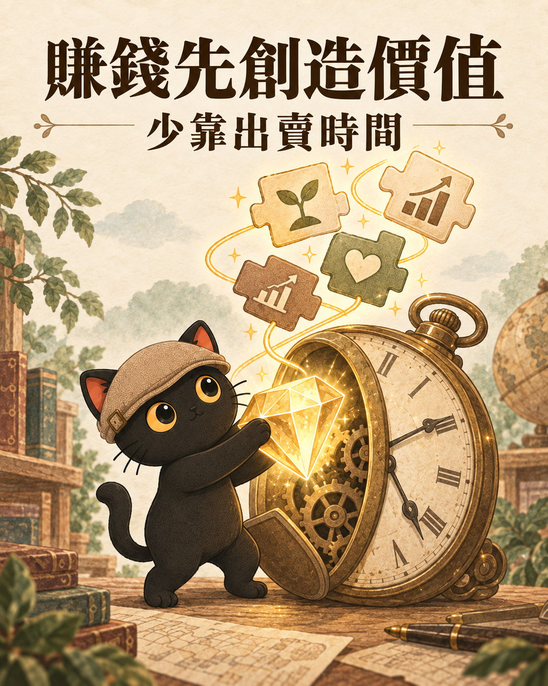
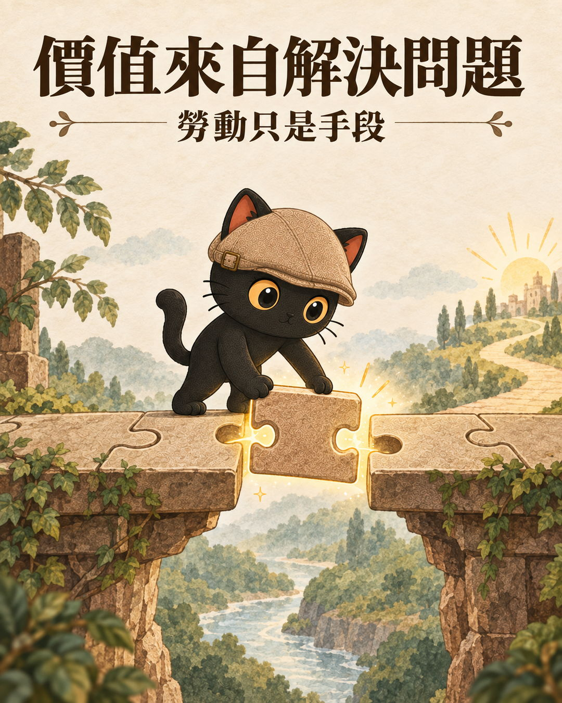
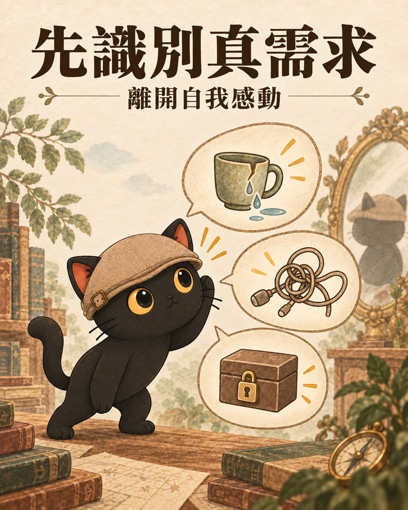
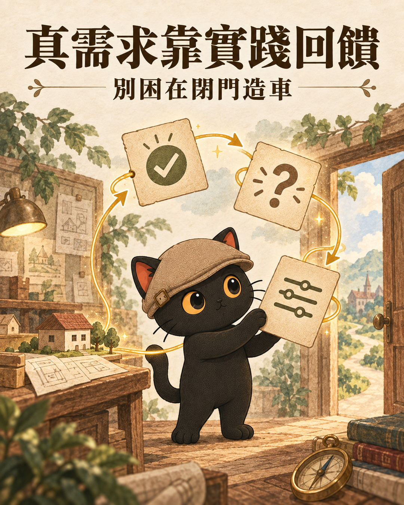
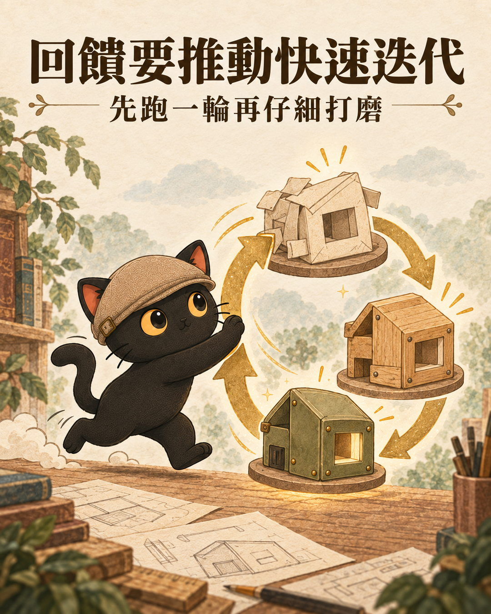
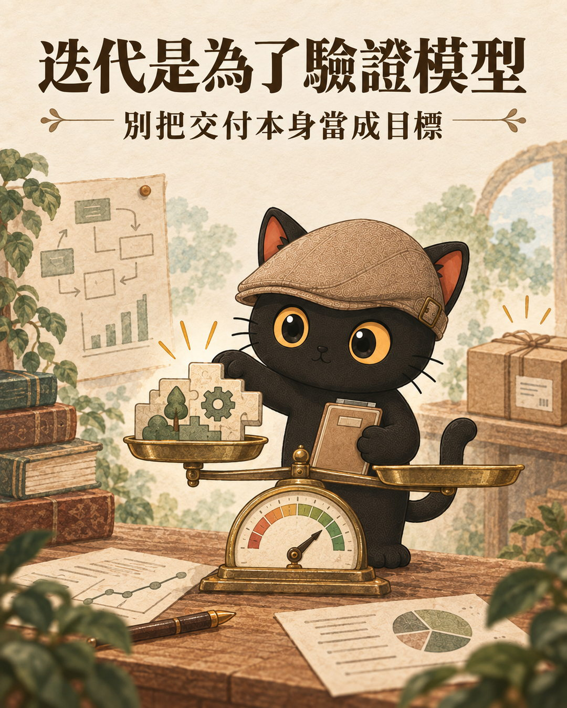
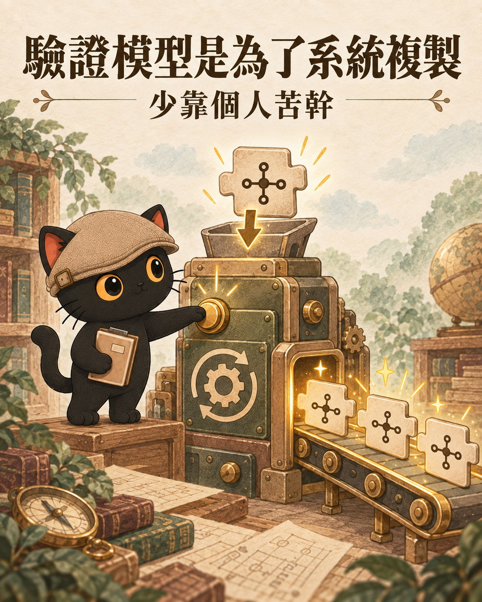
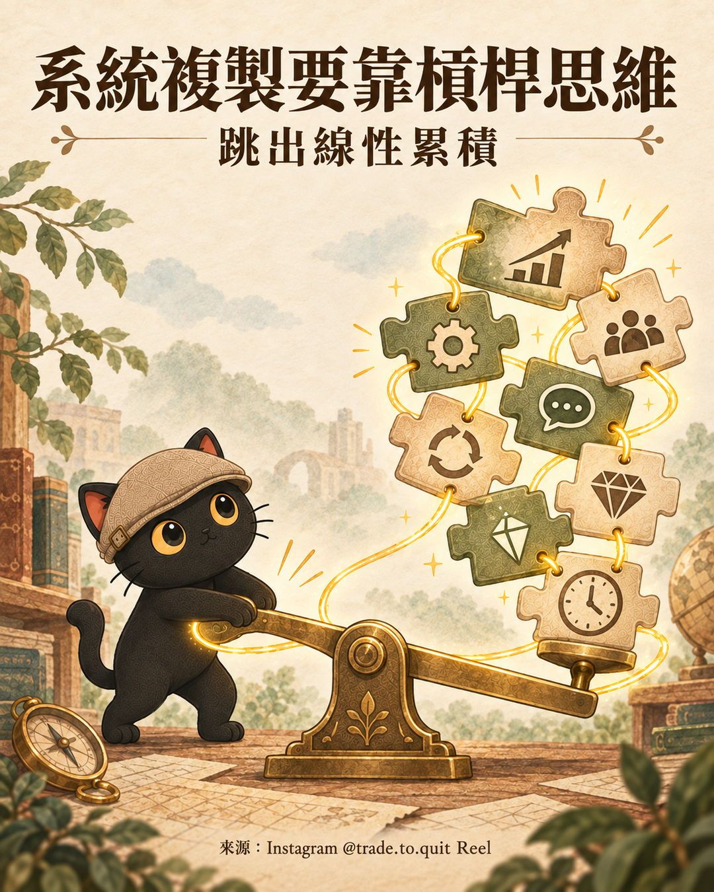
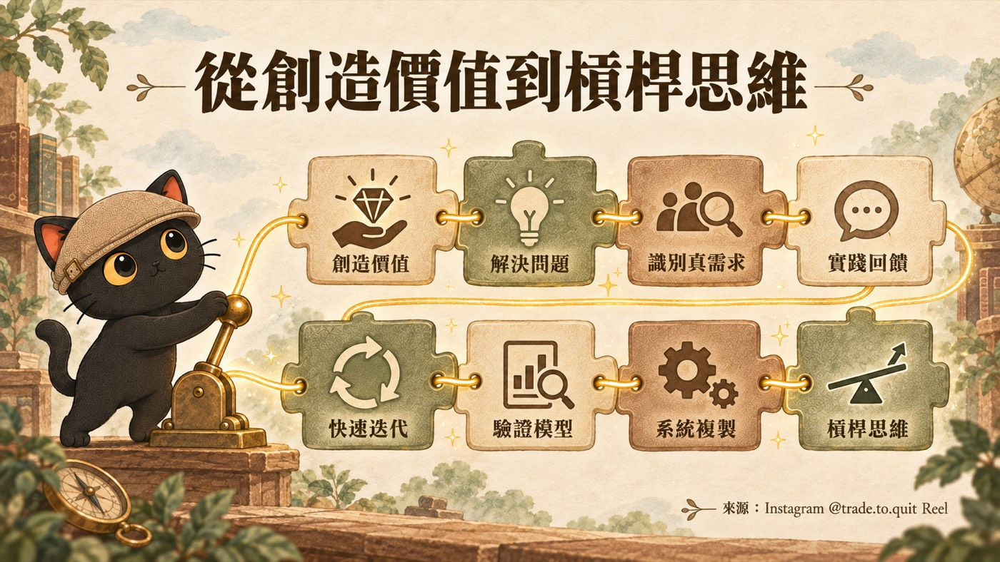

這篇在講什麼
網路上有一篇短文，把經營事業的第一性原理拆成 8 層，從創造價值一路問到槓桿思維。第一眼像雞湯，認真讀會發現它剛好示範了第一性原理：每一層都在問「底下真正要成立的是什麼」。這篇先放原文與輪播卡，再講第一性原理是什麼、馬斯克的公開思路怎麼用它，最後整理成一份事業檢查表。
- 經營一人公司或小生意，很努力，收入卻一直跟工時綁在一起
- 常聽到「第一性原理」，卻說不出它具體怎麼用在自己身上
- 手上有產品或服務的點子，想在投入更多之前先檢查站不站得住
- 陪客戶檢查事業的顧問或教練，想要一份能直接拿去問客戶的清單
- 第一性原理的白話解釋
- 8 層各自要檢查什麼、看什麼證據、下一步做什麼
- 八層事業檢查表，和一段可以直接貼給 AI 的提示詞
先看這篇雞湯文
這段內容是我在網路上看到的，原本只打算當成一則雞湯脆文分享。我實際發出去的脆文是這樣：
脆文原文：Threads 貼文 ↗
來源：Instagram @trade.to.quit Reel（帳號 @trade.to.quit）。影片講者是誰，本文不做推測。
八層輪播卡：一張一層，想細看再點開
這則脆文搭配一組輪播卡。經營事業的第一性原理，可以一路拆成 8 層：創造價值、解決問題、識別真需求、實踐回饋、快速迭代、驗證模型、系統複製、槓桿思維。









點任一張放大，點背景或按 Esc 關閉。
這篇雞湯文，其實是第一性原理的好示範
來源每一層都用同一個句型：「A 的第一性原理是 B」，再拿一個常見做法當對照。例如賺錢的第一性原理是創造價值，對照的是出賣時間。每一層都把上一層再往下問一次，直到問出可以動手檢查的東西。
第一性原理是什麼：拆到拆不下去，再重新組回來
白話說：遇到問題，先不急著照別人的做法做，把它拆到最基本的事實和限制，再從那裡重新組回一個做法。
相對的思考方式是類比：別人這樣做成功了，就照著做。類比省時間，風險是別人成功的條件你不一定有，你會連他的假設一起繼承。
馬斯克怎麼用第一性原理：三件事和六步拆解
談第一性原理，馬斯克（Elon Musk）常被拿來舉例。我做過一個馬斯克第一性原理技能包，整理他公開資料裡反覆出現的思考模式。以下是歸納出的做法，不代表他的逐字原話或本人立場。
這套思路重視三件事：
- 回到事實：先分清什麼是真的，什麼只是大家都這樣做。
- 壓低假設數量：每多一個沒驗證的假設，就多一個失敗入口。
- 用實驗逼近答案：意見分歧時，設計一個更快、更便宜、更能暴露錯誤的測試，讓現實回答。
操作上是六步：
拿他當例子，看的是方法。他本人的決定與爭議，另當別論。
- 馬斯克技能包：給創業者與主管的第一性原理顧問 這篇只用到它的三件事和六步，那篇交代這個顧問怎麼問你、三種模式怎麼用
- 想用 AI 提升效率，結果都在瞎忙？｜馬斯克五步工作法與第一性原理，先刪掉再自動化 六步裡的「砍掉複雜度」，那篇用五步工作法展開成先刪再自動化的做法
八層拆開來看：每一層檢查什麼、看什麼證據、下一步做什麼
每層分四塊：來源主張、這層在檢查什麼（本文解釋）、需要的證據、下一步（可執行建議）。
創造價值：先確認有人因為你變得更好
- 來源主張
- 賺錢的第一性原理是創造價值，對照的是出賣時間。
- 檢查
- 收到的錢，對應的是對方得到的結果，還是你花掉的時數。
- 證據
- 客戶能用自己的話說出「用了之後，我哪裡變好了」。
- 下一步
- 每個收費項目旁邊補一句「客戶得到的結果」，寫不出來的就是還在賣時間。
解決問題：價值要落在一個說得出口的問題上
- 來源主張
- 創造價值的第一性原理是解決問題，對照的是提供勞動。
- 檢查
- 你做的事，對應到客戶哪一個具體問題。
- 證據
- 能用一句話寫出「誰、在什麼情況下、卡在哪裡」。
- 下一步
- 把服務改寫成「幫＿＿解決＿＿」，給三位目標客戶看，問他們像不像在講自己。
識別真需求：分清客戶真的要，還是你覺得他要
- 來源主張
- 解決問題的第一性原理是識別真需求，對照的是自我感動。
- 檢查
- 客戶是自己痛到想處理，還是你覺得他應該處理。
- 證據
- 客戶已經在花時間或花錢處理這件事。過去的行為比「好像不錯」可靠。
- 下一步
- 問幾位目標客戶上次遇到這問題怎麼處理，只問已經發生的事。
實踐回饋：真需求要拿到外面測
- 來源主張
- 識別真需求的第一性原理是實踐回饋，對照的是閉門造車。
- 檢查
- 你的判斷有沒有經過真實的人使用或付費。
- 證據
- 有人用過、付過錢、回頭來問，或明確拒絕並說了原因。
- 下一步
- 做一個最小版本（一頁說明、一次試做），這週就讓真實的人碰到。
- Tesla 內部的一套工作方法，把自動化排在最後一步｜客戶說想用 AI 卻講不清楚要做什麼，從一個人的需求開始 對應第二、三層：從一個人的具體問題開始，分清真需求
- 花大錢做產品前，先用 AI 驗證創業點子 對應第四層：在投入大錢之前，先拿到外面的回饋
快速迭代：先跑完一輪，再決定哪裡值得打磨
- 來源主張
- 實踐回饋的第一性原理是快速迭代，對照的是仔細打磨。
- 檢查
- 從拿到回饋到做出修改，隔了多久。
- 證據
- 一份修改紀錄：改了什麼、因為哪則回饋、反應有沒有變。
- 下一步
- 固定每週一次，每次只改一件最多人卡住的事。
驗證模型：交付之後，還要確認這門生意成立
- 來源主張
- 快速迭代的第一性原理是驗證模型，對照的是為了交付驗證。
- 檢查
- 迭代只是為了交出這一單，還是在確認「誰會買、為什麼買、怎麼找到他、划不划算」整套成立。
- 證據
- 不同客戶重複出現同樣的購買理由；成本和收入算得過來。
- 下一步
- 把這四格寫成一頁，填不出來的格子就是下一輪要驗證的。
系統複製：把成立的做法，從個人手上拿出來
- 來源主張
- 驗證模型的第一性原理是系統複製，對照的是個人苦幹。
- 檢查
- 這件事離開你，還做不做得出來。
- 證據
- 有步驟、範本或檢查表，別人或 AI 照做，品質差不多。
- 下一步
- 挑一件每次都親自做的事，寫成步驟交給別人或 AI 做一次。做不出來的地方，通常是還留在腦袋裡、沒寫下來的經驗。
槓桿思維：讓同一份努力被放大
- 來源主張
- 系統複製的第一性原理是槓桿思維，對照的是線性累積。
- 檢查
- 收入和影響力，是否還跟投入時數一比一增加。
- 證據
- 有部分成果在你沒額外投入時間時產生，例如內容被重複閱讀、流程由別人或 AI 在跑。
- 下一步
- 列出系統裡哪一段能交給 AI、軟體、內容或夥伴放大，先挑一段試。
- 個人工作室與一人公司差在哪？我會看兩件事 這篇講從個人苦幹走到系統與槓桿，那篇講把專業產品化成可以反覆運作的系統
八層事業檢查表
從第一層往下勾，第一個勾不下去的，通常就是現在最該處理的那層。
把檢查表交給 AI：可以直接複製的提示詞
想被問得更直接，可以用我做的馬斯克第一性原理技能包。它有第一性原理顧問、靈魂考驗、假設審計三種模式，不扮演本人，高風險領域只給思考框架。
這套框架能幫到哪裡、幫不到哪裡
- 它是來源提出的層層追問框架，拿來找問題好用，沒有被證實適用所有事業。
- 順序可以參考。有些生意要先搭好系統才能交付。
- 檢查表幫你看出卡在哪層，怎麼突破還是要回到自己的客戶與數據。
- 這篇提到過的：馬斯克技能包：給創業者與主管的第一性原理顧問 想讓 AI 用第一性原理反問你，從這裡開始
- 這篇提到過的：想用 AI 提升效率，結果都在瞎忙？｜馬斯克五步工作法與第一性原理，先刪掉再自動化 砍掉複雜度的完整做法
- 這篇提到過的：Tesla 內部的一套工作方法，把自動化排在最後一步｜客戶說想用 AI 卻講不清楚要做什麼，從一個人的需求開始 檢查表第二、三層勾不下去時先讀
- 這篇提到過的：花大錢做產品前，先用 AI 驗證創業點子 第四到六層的驗證怎麼做
- 這篇提到過的：個人工作室與一人公司差在哪？我會看兩件事 往後一步：從賣時間走到一人公司